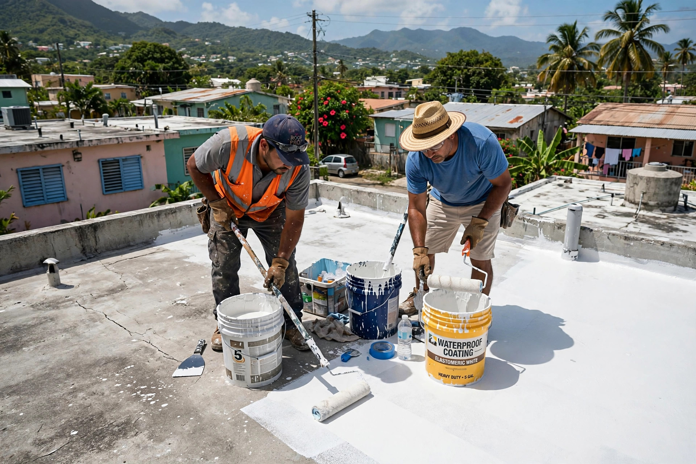
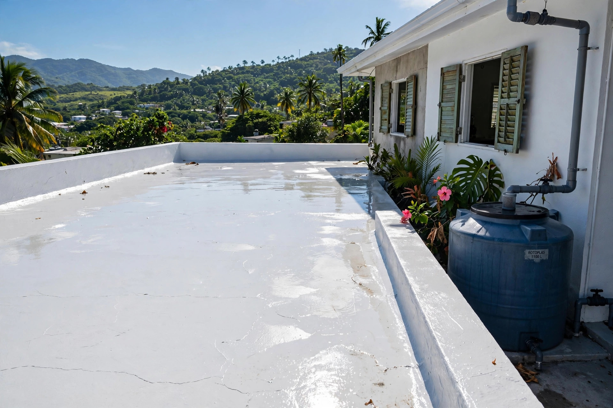

Puerto Rico
Grupo La Fiebre Valenzuela: sellado de techos con Crossco 8500, fórmula acrílica elastomérica 100%. El techo queda sellado y refrescado.
Resultados reales
Trabajos de techo reales hechos por La Fiebre Valenzuela. Desliza la cinta y toca cualquier foto para verla grande.


← desliza para ver los trabajos →
Lo que hacemos
Un producto, bien aplicado: acrílico elastomérico 100% que sella de verdad.
Sellado con Crossco 8500: acrílico elastomérico que sella y refresca el techo.
CrosscoFórmula 100% acrílica elastomérica que se mueve con el techo sin rajarse.
ElastoméricoCorregimos grietas y filtraciones antes de aplicar el sellador.
ReparaciónLavamos el techo para que el sellador agarre sobre superficie limpia.
PreparaciónEvaluamos tu techo y te cotizamos el sellado que necesita.
CotizaRetoques y mantenimiento para que el sellado siga trabajando.
MantenimientoAsí de fácil
Llámanos al 787-324-3022 o escríbenos por WhatsApp y coordinamos.
Lavamos el techo completo y corregimos grietas.
Aplicamos el Crossco 8500 en las capas que tu techo necesita.
Sellamos el techo. Listo para la lluvia y el sol fuerte.
Quiénes somos
Grupo La Fiebre Valenzuela se dedica a una cosa y la hace bien: sellar techos en Puerto Rico con Crossco 8500.
Fórmula acrílica elastomérica 100%: sella, protege y refresca el techo de tu casa.
Preguntas frecuentes
Crossco 8500: sellador acrílico elastomérico 100%.
Depende del clima y las capas. Te orientamos al cotizar por WhatsApp al 787-324-3022.
El sellador acrílico refresca la superficie del techo, lo que ayuda a bajar el calor que entra a la casa.
Trabajamos con Crossco 8500 aplicado como manda el producto. Pregúntanos los detalles por WhatsApp al 787-324-3022.
Llama al 787-324-3022 o escríbenos por WhatsApp y coordinamos la visita.
Agenda tu evaluación
Llena esto y te abrimos WhatsApp con tu mensaje listo.
Estimados gratis: llámanos al 787-324-3022 o escríbenos por WhatsApp para coordinar.
Esta página la creó ManuPro. Escríbenos hoy mismo y cotiza la website profesional de tu negocio.
Cotizar por WhatsApp